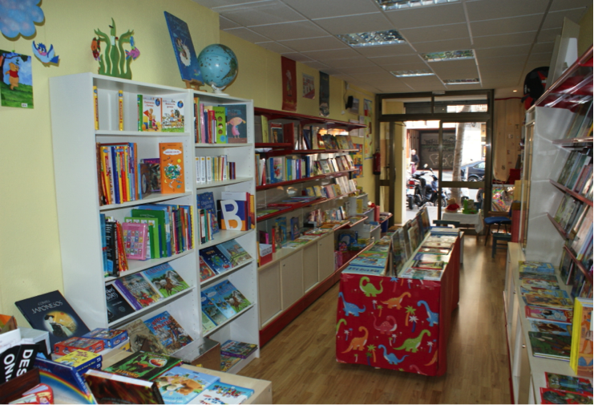

Qui som i quins són els nostres origens
- 
Detall de l'antiga llibreria Lletralligada.
Situada entre l'emblematica Sagrada Família i la vila de Gràcia, va esdevenir durant més de dos anys un espai únic per descobrir la lectura als més petits.
Lletralligada neix com un projecte de llibreria-taller, un espai pensat per als infants on poden gaudir de la màgia dels llibres amb l’objectiu principal de fomentar els hàbits de lectura, imprescindibles per al desenvolupament no només del llenguatge, sinó de molt altres aprenentatges essencials en el creixement dels nens i nenes.
Aviat ens vam adonar que les dificultats que alguns nens presentaven en el desenvolupament del llenguatge dificultava l’adquisició d’aquest hàbit; el nen, tot i mostrar un gran interès pels llibres es sentia frustrat quan veia les dificultats que tenia per entendre el contingut i llegir-lo amb fluïdesa.
Aquesta experiència ens ha portat a reconduir la nostra tasca. Si volem potenciar els hàbits de lectura hem de treballar des dels inicis totes les dificultats que es presenten en l’adquisició del llenguatge, el desenvolupament de la parla i més endavant en l’aprenentatge de la lecto-escriptura.